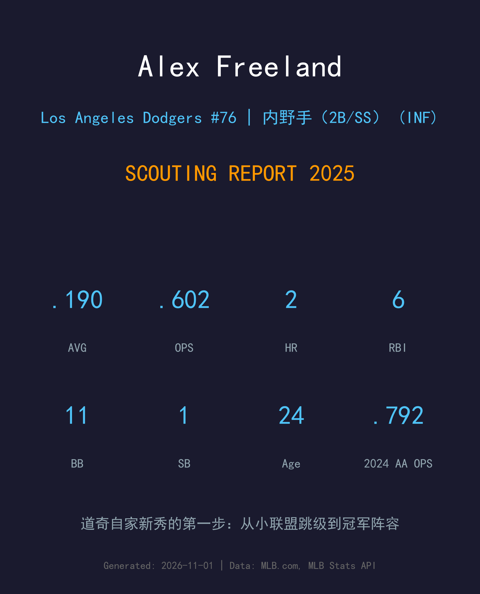
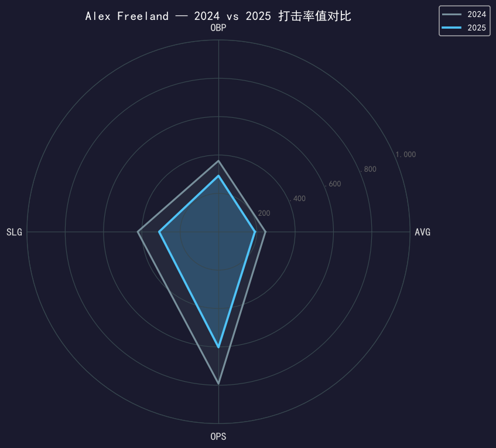
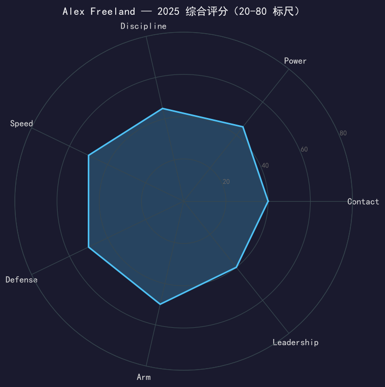

Los Angeles Dodgers #76 | 内野手（2B/SS） | 左右开弓 | 道奇自家新秀

⚠️ 小样本警告：本报告基于 97 个大联盟打席的新秀数据。
Alex Freeland 的 2025 年是道奇农场体系的 standard success story：7 月 29 日合同被选入 40 人名单，次日完成大联盟首秀，成为这支冠军球队在伤病潮中最信任的内野补丁——二垒、游击、三垒都有他的身影。97 个打席缴出 .190/.292/.310，率值不好看，但 11 次保送（保送率 11.3%）是这份成绩单里最亮的信号：他的选球纪律从小联盟一路带上了大联盟。
9 月 4 日他被下放回 3A，9 月 29 日赛季收官前又被召回——出现在冠军队的外卡轮名单里。对一位 24 岁、2022 年才被选中的左右开弓内野手来说，第一年就能在十月名单上拥有名字，这比任何率值都更有分量。他的模板就穿在同一件更衣室里：Miguel Rojas。
74 场 .245/.370/.422、11 轰 35 打点，外加 3A Oklahoma City 39 场——全年横跨两个级别，守备覆盖二垒/游击/三垒，入选道奇 40 人名单的讨论从那时开始。
对亚利桑那完成首秀；从被选入名单到站上大联盟场地只用了一天。首秀月交出 4 支二垒打级长打中的第一支三分打点关键时刻。
赛季最后一周被召回，进入外卡轮名单——新秀年就成为世界大赛冠军队的阵容深度一员。

| 赛季/级别 | G | PA | AVG | OBP | SLG | OPS | HR | RBI | BB | SO |
|---|---|---|---|---|---|---|---|---|---|---|
| 2024 (2A Tulsa) | 74 | - | .245 | .370 | .422 | .792 | 11 | 35 | - | - |
| 2025 (MLB) | 29 | 97 | .190 | .292 | .310 | .602 | 2 | 6 | 11 | 35 |
从 2A 跳级大联盟，AVG 下滑 55 点是正常的翻译损耗。重点看结构性指标：保送率从小联盟的 elite 水准（2024 年 2A 约 14%）维持到大联盟的 11.3%，说明他的 eye 是真实工具；35 次三振（36%）则是跳级的代价，与大联盟投手的高速球和变化球还需要一个完整赛季的适应。2A 的 11 轰 power 在 97 个打席里只兑现 2 支，但他的挥棒轨迹和体型（5'11"/200）暗示 power 会回来。
Freeland 是道奇体系最看重的类型：switch-hitter + 三个内野位置都能守。这使得他在一支老年化的冠军阵容里是天然的 roster 粘合剂——Rojas 需要休息时他守游击，Edman 外移时他守二垒。97 个打席的小样本下守备没有出现任何失误记录层面的争议，action 干净。
11.3% 的保送率在 2025 届新秀里名列前茅。他的打击策略清晰：先把自己送上垒，再靠速度（小联盟每年都有两位数盗垒潜力）制造压力。当 contact 跟上 eye 的时候，他会是一个 league-average 以上的进攻型内野。
7/30 首秀 → 8 月作为内野主要轮换出赛 → 9/4 随名单收缩下放 → 9/29 为十月召回。这条曲线本身就是道奇对他的评价：常规时间能用，关键时刻敢带。他没有出现在任何一场季后赛里，但外卡轮名单上的名字意味着教练组已经把「Freeland 可用」写进了明年的计划书。

eye 先行的新秀内野；contact 追上来就是下一个 Rojas
C+ 级 / 新秀观察期（小样本警告）
道奇 2025 季后赛之路：外卡轮 2-0 红人 → NLDS 3-1 费城人 → NLCS 4-0 酿酒人 → 世界大赛 4-3 多伦多蓝鸟（二连霸）。
Alex Freeland 的 2026 年路径清晰：从 3A Oklahoma City 开始，等 Rojas 选项年的任何风吹草动。他是道奇内野 succession plan 里的第一顺位候补——左右开弓、三位置、eye 已验证，剩下的只是让 contact 跟上。如果进步曲线正常，他会是 2027 年道奇二游轮换的常规成员。
短期：3A 打磨 contact，目标三振率降到 25% 以下
中期：进入大联盟内野轮换，年出赛 80+ 场
长期：Rojas 角色的继承人——冠军队的多功能内野答案
Alex Freeland 出生于肯塔基州路易斯维尔，2022 年被道奇选中后从 rookie ball 一路稳扎稳打：2023 年高阶 1A，2024 年 2A Tulsa 打满 74 场并升上 3A，2025 年 7 月 29 日，他的名字第一次出现在道奇 40 人名单上——第二天，他就站上了大联盟的内野。
在这支拥有 Rojas、Edman、金惠成的冠军内野里，Freeland 的机会窗口很小，但他抓住了每一次：守过三个位置，交出了全队新秀里最老成的保送率。九月底的召回是他新秀年的句点，也是下一章的冒号。